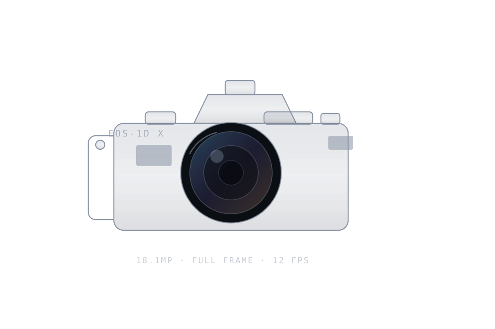

数码相机 · 2012 年发布
Canon EOS-1D X
类型135 全画幅单反，一体化竖拍手柄
传感器18.1MP CMOS 36 × 24mm
连拍最高 14 fps （反光板固定）
重量约 1340 g 含电池
入手状态二手，快门数比较高
- 为什么买
- 我想要一台真正为拍摄而生的机器，而不是一台"功能很多"的电子产品。1DX 是那种你把眼睛贴上去之后会自动安静下来的相机：取景器又大又亮，快门声很沉，对焦不会犹豫。
- 用起来怎么样
- 高感比参数看起来好。ISO 3200 出 RAW 稍微修一下就能用，6400 勉强可以接受，前提是别硬拉阴影。对焦点虽然只有 61 个、还是老一代的方案，但拍运动时的黏着感比我预期强很多。机身重是缺点也是优点——配上 70-200 之后反而更稳。
- 缺点
- 重，真的重。带它出门我会认真考虑今天到底拍不拍。屏幕素质一般，回放照片的观感比实际成片差。没有 Wi-Fi，导照片只能插卡。动态范围放到今天看确实不够，暗部一拉就有噪点。
值，但要看你想要什么。 如果你要的是参数表，加钱买微单。如果你想要一台不怕摔、拿起来就想拍照、二手价格又很友好的机器，那它依然成立。只是你得接受它的重量和三叶草式的老操作逻辑。